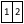
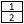

English Русский
Добро пожаловать на Mapcher
Прочтите этот документ для ознакомления с Мапчером.
Что такое Мапчер?
Мапчер или Мэпчер - инструмент для визуального сравнения удаленных географических объектов и расстояний.
Технически Мапчер - это:
- Две карты Google maps или Yandex maps, расположенные рядом в одном окне
- У двух этих карт автоматически поддерживается одинаковый масштаб
- Эти google- и яндекс-карты можно вращать

Зачем нужен Мапчер?
Как ответить на вопрос собеседника (обычно женщины): Это как от нас докуда?
Приходится в уме подбирать знакомые вам обоим ориентиры и неуверенно отвечать: "Это приблизительно как от нас до..." И конечно же, после данного ответа терзает сомнение, правильно ли соотнёс расстояния, ведь наверняка ошибся. Вот бы взять и сопоставить две карты, наложить одно расстояние на другое.
Когда пытаешься себя проверить, делаешь так: Открываешь Яндекс-карты в двух окнах браузера, располагаешь их рядом, в одном окне находишь то расстояние, о котором спрашивали, в другом - свою знакомую местность. Выставляешь одинаковый зум.
Видишь, что одинаковый зум не значит одинаковый масштаб. Ведь масштаб карты зависит от широты.
А если повезло, и широта, а соответственно и масштаб, совпали, есть следующая засада: Одно расстояние идёт с юга на север, а другое - с запада на восток.
Как непросто было до сего дня ответить на такой простой вопрос: Это как докуда
! Но теперь есть Мапчер.
Мапчер - это незаменимый источник ответов на все на свете вопросы типа Это как докуда?
или Что больше?
С его помощью можно сравнить города, районы, страны, озера, моря и другие объекты на карте. Сравнить расстояния до школы, магазина, аптеки, больницы при выборе нового места жительства по сравнению с теми же расстояниями на старом месте.
Как пользоваться Мапчером?
- Зайдите на сайт mapcher. Дождитесь загрузки двух карт.
- На одной карте перейдите к знакомой вам местности. Для этого можно воспользоваться поиском
 или позволить сайту самому определить ваше положение .
или позволить сайту самому определить ваше положение .
- На второй карте найдите местность, которую нужно сравнить с вашей знакомой местностью.
Программа автоматически поддерживает одинаковый масштаб на обеих картах. Если вас смущает это поведение сайта, отключите его кнопкой "Независимый зум" . Не забудьте отжать кнопку, когда найдете обе местности.
- Если нужно повернуть карту, потяните её правой кнопкой мыши или перетяните специальный маркер
 .
.
- Поделитесь сопоставленными картами через социальную сеть или перешлите ссылку на сравнение, скопировав её из адресной строки.
Что делают кнопки на картах?
 Кнопка меню открывает меню со следующими опциями:
Кнопка меню открывает меню со следующими опциями:
 Переключение локализации
Переключение локализации
При выборе русского или английского языка загружается нужная языковая версия. Кроме языка изменяются единицы измерения и набор доступных слоёв карт: Народная карта Яндекса доступна только в русской версии.
  Ориентация расположения карт
Если нужно сравнить длинные узкие объекты, лучше выбрать вертикальную раскладку. Для компактных объектов подойдёт горизонтальное расположение карт.
 Сброс настроек
Сброс настроек
Разработка сайта продолжается и иногда программа глючит и рвёт шаблоны. Кнопка "Сброс" стирает куки и возвращает вас в исходное положение.
Помощь
Описание сервиса, которое вы сейчас читаете.
Кроме кнопки меню на карте имеются кнопки используемые для работы с картами:
Кнопка геопозиционирования
Фокусирует карту на ваше текущее расположение.
Кнопка поиска
Вызывает поле ввода для поиска географических объектов по всему миру.
 Кнопка слоёв
Кнопка слоёв
В выпадающем списке можно выбрать тип карты: Яндекс, Народная карта Яндекса, Google, OSM, Спутниковые снимки.
 Кнопка построения маршрута
Кнопка построения маршрута
 Кнопка "Компас"
Кнопка "Компас"
При вращении карты компас всегда показывает на север. При нажатии этой кнопки карта поворачивается в исходное положение.
Кнопка "Контур"
При нажатой кнопке включается режим рисования контуров. Для отключения режима рисования отожмите кнопку. Нарисованный контур можно одним кликом перебросить на другую карту. Так можно наложить контур одного объекта на другой.
Кнопка "Независимый зум"
Временно отключает автоматическую синхронизацию зума на двух картах.
Инструмент зума
Позволяет изменить уровень зума с большей точностью, чем это можно сделать мышью.
 Кнопка "Измерение расстояний на карте"
Кнопка "Измерение расстояний на карте"
Кнопки социальных сетей
Позволяют опубликовать в вашей социальной сети заметку со ссылкой на выполненное вами сопоставление карт.